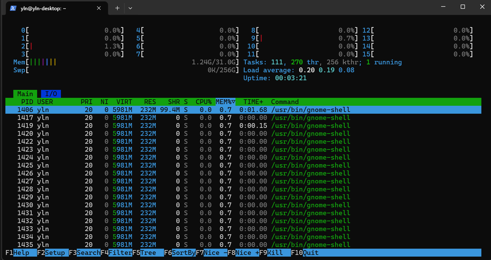
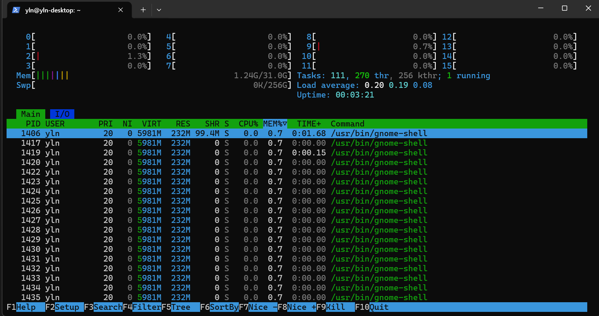
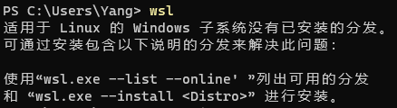
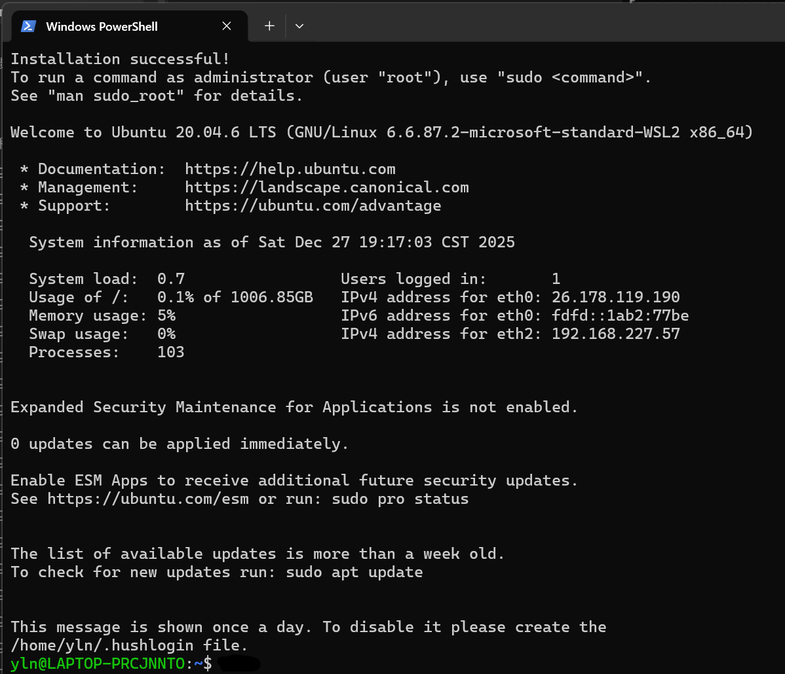
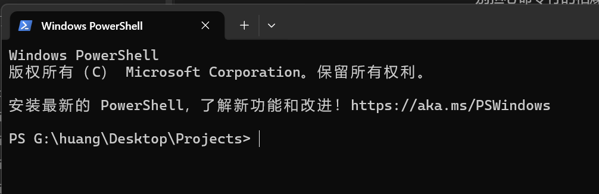
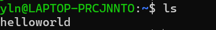
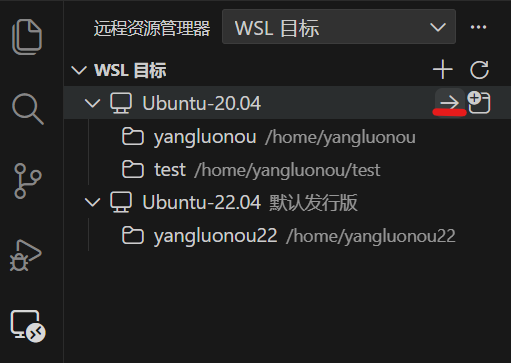

第一章 Linux入门初步
第零章补充：如何快速在Windows终端中打开某个目录
除了可以通过cd 命令打开目录，还可以在已经打开的文件夹中右键空白处选择 在终端打开 实现快速打开终端并进入这个目录


#前言
经过第零章的基础铺垫，相信大家已经掌握了一些作为一名开发者在Windows下的基本素养。如果说Windows是我们日常生活的”舒适区“，那么Linux便是我们作为工程师的”作业区“。
在飞行器控制、机器人和人工智能等领域，Linux拥有绝对的统治地位。不仅如此，日常生活中我们其实一直在与Linux打交道，你手机上的app，浏览的各种丰富多彩的网页，背后的服务器基本都是在Linux系统上运行着的。因此，学会使用Linux是几乎每位开发者必备的技能，更是我们今后最常用最基础的工具平台。
过去，想要学习 Linux 往往意味着要在“双系统”的折腾中重装无数次电脑，或者忍受虚拟机的卡顿。但幸运的是，你们如今拥有了Windows下最好用的Linux开发环境——WSL (Windows Subsystem for Linux)。
本章的目标非常明确：在你的 Windows 电脑里，无缝嵌入一个高性能的 Linux 开发环境。 在这个章节中，我们将不再依赖鼠标和图标，而是开始学习如何用键盘打出命令与代码和计算机对话。别担心命令行的枯燥，这将会是通往高阶开发的必经之路。
#第一节 什么是Linux
Windows，是我们从刚接触电脑后最熟悉的朋友，它像一个装修精美、服务周到的精装房——你只需要点击图标，一切都为你准备好了。
而 Linux，更像是一个工具齐全的机械加工车间。
核心概念：内核与外壳
严格来说，Linux 只是一个内核 (Kernel)，它是操作系统的“心脏”，负责管理 CPU、内存和硬件驱动。但我们通常所说的“Linux”，是指基于 Linux 内核的一整套操作系统（如 Ubuntu, Debian, CentOS）。
作为初步入门教程，我们不需要你去详细理解记住操作系统的历史，你目前只需要理解 Linux 系统的两个核心组成部分：
- 内核 (Kernel)： 它是大管家，极其稳定、高效。你的飞控算法最终能否实时运行，很大程度上取决于它的调度。
- 外壳 (Shell)：** 这是我们与内核对话的窗口。在 Windows 里，你用鼠标点击；在 Linux 里，我们更多时候使用命令行 (Terminal)。
- 想象一下： 鼠标点击只能执行Windows预设好的功能（就像开自动挡的车）；而输入命令则能让你精确控制系统的每一个细节（就像开手动挡赛车，虽然上手难，但上限极高）。
#我们为什么要使用Linux？
可能大家会有一个疑问，Windows这么方便我们为什么还要使用Linux呢？
作为日常使用的操作系统，Windows 无疑是优秀的——它界面华丽、软件丰富、服务周到。但在 科研界、服务器机房 以及 实验室 的开发环境中，Linux 才是绝对的“通用语”。这并非是因为工程师们喜欢“特立独行”，而是由 工程需求的本质 决定的。
-
拒绝“强制消费”：资源效率与 Headless 模式
- Windows 的逻辑： 它假设你是一位需要视听享受的用户。因此，无论你是否需要，它都会加载桌面窗口管理器、动画特效、后台更新服务、打印机服务、音频服务……这就像你想买一瓶水，超市却强制你买下一整个购物车的商品。
- Linux 的逻辑： 它假设你是一位追求极致效率的工程师。Linux 服务器和科研工作站通常运行在 Headless（无头）模式 下——即没有图形界面。
- 这对我们意味着什么？ 当我们在跑深度学习训练或高保真物理仿真（如 Gazebo）时，操作系统本身占用的资源极少，几乎 100% 的 CPU 和内存都能服务于你的算法，而不是浪费在渲染漂亮的窗口动画上。
 

这两张图分别是Windows11(新系统)和Ubuntu20.04系统在重启后不手动打开任何应用后台内存占用情况，Windows11开机便有3G左右的内存占用，而Ubuntu开机后只有1.24G左右的内存占用(如是新系统会更少，甚至可以达到500MB左右) -
只有你才能决定何时休息: 稳定性与控制权
- Windows 场景： 你让电脑跑了三天的仿真，结果在半夜两点，Windows 触发了“自动更新”，强制重启了电脑。第二天早上你看到空荡荡的桌面…
- Linux 场景： Uptime (在线时间) 是 Linux 服务器的勋章。除非你亲自输入
reboot命令，否则它绝不会擅自中断任务。这种“确定性”是科研工作的基石。世界上最繁忙的服务器往往几年才重启一次。
-
生态霸权：飞控以及众多开发的“母语”
除了性能，还有一个更现实的原因：我们这个圈子的顶级工具，都是“Linux 优先”的。- ROS (Robot Operating System)： 虽然 ROS 2 开始支持 Windows，但在 Linux 下的库兼容性和运行效率依然是碾压级的。
- 开源飞控 (PX4 / ArduPilot)： 编译固件时，Linux 下的工具链（Toolchain）配置只需一行命令，编译速度通常比 Windows 快 20%-50%。
- 机载计算机： 当你以后做真机实验，无人机上搭载的 Raspberry Pi、Jetson Orin 或 NUC，运行的统统都是 Linux。
-
自动脚本的力量
Windows 擅长图形化“点击”，Linux 擅长脚本“批处理”。 假设你需要分析 1000 个无人机的飞行日志文件（.ulg），找出所有“高度掉落超过 2米”的数据段：- Windows 做法： 打开软件 -> 导入文件 -> 等待 -> 人眼筛选 -> 甚至可能需要 Excel……进行复杂的各种函数计算操作。
- Linux 做法： 写一行包含
grep或awk的脚本命令，回车，去喝杯咖啡，回来拿结果。
“开源”对科研的意义：
开发科研方面使用Linux居多还有一个原因是因为这个系统是完全开源的；“为什么它是开源的这点很重要？因为当你以后做深层次的飞控算法研究或者其它深入的开发时，你可能会发现系统自带的驱动满足不了你的实时性要求。在 Windows 下你只能干瞪眼，但在 Linux 下，你可以直接修改内核源码，编译一个属于你自己的操作系统。这就是科研自由。”
#为什么我们要使用 Ubuntu？
既然 Linux 只是个内核（发动机），那我们没法直接开着发动机上路。我们需要有人把发动机、轮胎、内饰、音响组装成一辆完整的车——这就是发行版 (Distribution)。
不同的发行版就像不同的汽车品牌：
- RedHat/CentOS: 像是重型卡车。稳定、保守，服务器用了十年都不换，但软件版本通常很旧。
- Arch/Manjaro: 像是改装赛车。最新、最快，但也容易翻车（滚挂），适合老手折腾。
- Ubuntu: 像是丰田卡罗拉或者大众高尔夫。它在易用性、兼容性和稳定性之间找到了完美的平衡。
在我们未来的教程中，统一使用 Ubuntu (20.04 或 22.04 LTS)。因为它是 ROS (机器人操作系统) 和 PX4 飞控开发的首选平台，社区资源最丰富，遇到问题最容易在 Google 搜到解决方法。
#第二节 安装配置WSL
前提条件： 开启虚拟化支持（BIOS设置）。只要你没有自行修改过BIOS，此处应该都是默认开启的，如果希望确认一下或者重新开启该功能，请搜索 自己的电脑品牌型号+BIOS开启虚拟化支持 关键字来寻找教程，由于各个品牌型号这一步都不一致，因此在此不再赘述
另外：我们后续会用到大量外部网络资料，因此我们默认你已经使用了科学方法进行互联网连接，如果你还没有，请咨询同学或者学长
-
你可以参考文档安装 WSL | Microsoft Learn（注意安装Ubuntu-20.04版本），或者继续跟着本文章进行安装（建议读一读文档）
首先，右键开始按钮 选择 终端管理员 打开管理员模式下的终端，
选择 终端管理员 打开管理员模式下的终端，
输入wsl --install，耐心等待所有下载安装全部完成（如果不开代理的话这一步会比较慢，请耐心等候）
一切顺利的话会看到请求的操作成功。直到重新启动系统前更改将不会生效提示，请重启电脑 -
完成重启后打开终端，输入
wsl，可以看到我们已经成功安装了wsl
并且wsl提示我们还没有安装分发（系统）。接下来，请输入wsl --install Ubuntu-20.04 --web-download来安装Ubuntu-20.04（使用参数--web-download来规避缓慢的Microsoft Store，详见参数说明WSL 的基本命令 | Microsoft Learn）wsl所需要的空间较大，且后续安装软件也会增加其体积，请至少确保有50G空闲空间，
wsl --install默认安装在C盘，你可以通过添加参数--location来指定安装位置 -

等待安装完毕，启动进入系统，会让你设置username（用户名），和password（密码）。
注意：Linux的安全机制是你在输入密码时看不到你输入的任何内容，因此只要保证你的窗口处于激活状态（即焦点在该窗口上），输入密码并按回车即可。此处建议简单账号+简单密码即可
-
按照提示注册好后你便进入到了Ubuntu20.04的Shell界面
上面会输出一些系统信息，可以阅读一下，看看都有哪些信息。接下来，看到 这里，$ 后面便是你要输入命令的地方。
这里，$ 后面便是你要输入命令的地方。 -
接下来，为了更好的使用wsl，我们需要对它进行一些配置。
首先，配置wsl镜像你的网络以便局域网访问你的wsl和同步主机代理
参考文档 使用 WSL 访问网络应用程序 | Microsoft Learn
首先，打开Windows用户主文件夹：win+R打开运行，输入%USERPROFILE%
新建文件.wslconfig，写入内容1
2
3
4
5[wsl2]
networkingMode=mirrored
dnsTunneling=true
firewall=true
autoProxy=true新打开一个管理员模式的终端，键入命令
1
Set-NetFirewallHyperVVMSetting -Name '{40E0AC32-46A5-438A-A0B2-2B479E8F2E90}' -DefaultInboundAction Allow
以配置 Hyper-V 防火墙设置，使其允许入站连接
具体.wslconfig配置含义可以查看文档WSL 中的高级设置配置 | Microsoft Learn -
重启wsl
在终端键入wsl --shutdown将wsl关闭
重新键入wsl启动wsl
#第三节 Linux基础
- Linux文件系统结构
Linux系统文件是树型的，根目录/就像树的主干，其它所有目录在它上面延伸，像树枝一样。
其中，/home/<用户名> 是你的用户主目录，其还有一个简称~。输入cd /home/<你的用户名>或者cd ~，会发现$前的目录变成了~，此时输入pwd（查看当前目录）会输出/home/<你的用户名>，此处就是你的用户主目录，基本上你要写的代码、文档等都会放在这里（可以类比Windows中的桌面）。
在此处输入ls -a（显示所有文件）会发现一些隐藏的文件（Linux中.开头的文件默认是隐藏的） 此处的
此处的.和..目录分别代表着当前目录和上一级目录，请分别cd这两个目录看看会发生什么。
WSL中有一个特殊的目录，请输入cd /mnt，进入Linux系统默认挂载文件系统的地方（这里默认是Linux系统用来挂载外部存储设备的标准位置，例如光驱、USB设备、网络文件系统等），输入ls命令查看目录下的内容 ，
，
可以看到有几个小写单字母名称的目录，这些就是WSL自动挂载的你电脑上对应计算机内各个盘符的位置，通过这里就可以访问Windows系统上的文件了
注：请不要在 Linux 里去编译
/mnt/c/(Windows盘) 下的代码！因为 WSL2 跨系统访问文件的速度很慢。 正确做法： 把代码 Clone 到 Linux 的~(家目录) 下，然后编译。这能让你的编译速度快 10 倍以上。
提示：如果想使用wsl快速打开Windows目录可以通过在指定Windows目录下右键空白处选择 在终端打开，终端会打开该文件目录。在该目录下的终端中键入
wsl命令可以直接运行WSL并进入该目录

-
文本编辑器
Windows中我们常用的文本编辑器可能是Windows自带的记事本软件，在Linux中也有一些常用的文本编辑器，我们这里介绍最简单易入门的文本编辑器nano和常用的文件内容查看命令cat，有兴趣的同学可以自行搜索学习vim。
在用户主目录输入nano helloworld，我们可以看到一个这样的界面
其中，左上方显示当前nano版本信息，正上方为文件名，中间下方显示[ New File ]提示我们这是一个新文件（不存在的文件）,下方两行为快捷键提示。输入HelloWorld!，按下CTRL + O（写入）组合键
可以看到其提示我们写入的文件名，按下回车即可确认（按下CTRL+O和回车这两步可以用CTRL + S这个快捷键代替），最后按下CTRL + X关闭界面。可以看到，我们成功创建了一个helloworld文件。
nano中还有一个常用快捷键：CTRL+W（搜索），请自行依据下方提示尝试这个命令
cat命令是很常用的查看文件内容命令，输入cat helloworld 可以看到，我们的文件内容被输出到了终端上。
可以看到，我们的文件内容被输出到了终端上。
接下来，请使用nano编辑器修改apt软件源为国内镜像源，输入命令sudo nano /etc/apt/sources.list，将原来的内容全部使用#注释，然后在文件尾部添加文件内容：1
2
3
4deb http://mirrors.aliyun.com/ubuntu/ focal main restricted universe multiverse
deb http://mirrors.aliyun.com/ubuntu/ focal-security main restricted universe multiverse
deb http://mirrors.aliyun.com/ubuntu/ focal-updates main restricted universe multiverse
deb http://mirrors.aliyun.com/ubuntu/ focal-backports main restricted universe multiverse
保存并退出 -
软件包管理
Linux中安装软件最常用的是包管理器，APT是较常用的Linux包管理器的一种，包管理器就类似于手机的应用商店，通过apt命令，可以让系统自动取仓库将软件抓取回来并安装配置好。上一节中我们已经为它更换为了国内的镜像源，这里的源就指的是软件仓库，使用国内的镜像源可以获得更快的速度。
执行命令sudo apt update，apt会自动前往线上的源抓取所有的软件列表，并刷新缓存到本地。通常在每次安装新软件时都会先执行该命令来刷新列表。
apt命令apt install <软件包名>安装对应的软件包，请执行命令sudo apt install net-tools来安装网络工具，该工具提供命令ifconfig可以很方便的查看所有网卡网络状态（常用于查询本机IP）
命令apt upgrade用于更新所有已安装的软件，该命令不常用，因为可能会导致配置好的环境被破坏 -
权限
如果你在更换环境源那一部分输入了命令nano /etc/apt/sources.list，你可能会发现底部有一行提示[ File ‘/etc/apt/sources.list’ is unwritable ]，提示你文件不可写入，这里就是因为这个修改这个目录下的文件需要超级管理员（root）权限。Linux下使用超级管理员权限执行命令可以在命令前面加sudo来让命令以超级管理员权限执行。Linux系统可以通过sudo su命令切换到root用户。注意，Linux中的root用户权限是非常高的，该权限可以操作系统中的所有文件（包括删除系统文件），所以使用该权限请留一个心眼（（（（
chmod +x <文件名>(Change Mode)，该命令为指定文件添加可执行权限，linux系统默认所有新添加的文件都没有执行权限，只要赋予文件执行权限，该文件才可以被执行。请试着在用户主目录内新建一个helloworld.sh脚本文件，并填入内容1
echo HelloWorld!
当执行试图使用命令
./helloworld.sh执行该脚本时，会出现-bash: ./helloworld.bash: Permission denied文件无权限的提示，并且不可用tab键补全文件名。请尝试给它添加可执行权限，并执行它使其在终端输出HelloWorld!Linux中的命令大部分都可以使用tab键补全和提示，例如输入
sudo apt upd后按下tab键，可以自动补全update命令。chmod +x he按下tab键可以自动补全helloworld.sh文件名。请多尝试使用tab键补全，而不是一味的将命令全部打出。 -
环境变量
Linux中也有一个环境变量，其位置就在用户主目录下的.bashrc，类似于前面介绍的Windows环境变量。使修改后的环境变量立刻生效的指令是source ~/.bashrc -
连接wsl与VSCode
只有文本编辑器并不方便我们进行大量的程序改动或者编写，文本编辑器只适合我们对配置文件进行改动和少量程序的快速编写，因此我们需要更强大的编辑器VScode辅助（注意，使用VScode并不代表不需要学习Linux中常用的文本编辑器如何使用，使用Linux中常用的文本编辑器仍是最便捷的选择，VScode只适用于大量的文本修改）
搜索扩展wsl进行安装

安装完成后就会发现远程连接中多了一个wsl目标
点击箭头按钮即可连接 -
退出wsl
使用命令exit即可退出wsl会话（不是关闭）
在执行sudo su进入root用户后想要退回普通用户也可使用exit命令
#本章任务
- 依据本章内容将wsl环境配置好，并换好apt软件源。
- 在用户主目录新建脚本输出
Welcome Linux!并执行 - 安装好
net-tools，并使用ifconfig查看本机IP（找到无线网卡的inet字段）
#后记
本章为飞控及视觉后续的基础中的基础，请耐心学习，并勇于探索更多命令，本教程仅仅为基础入门使用。有任何问题请及时反馈。